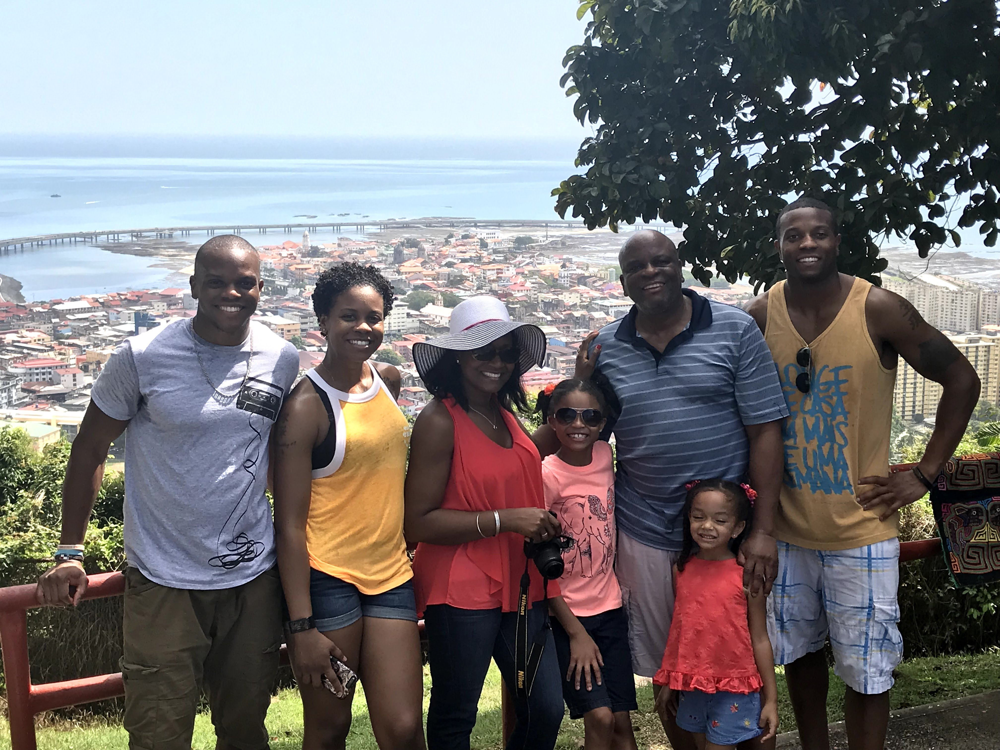
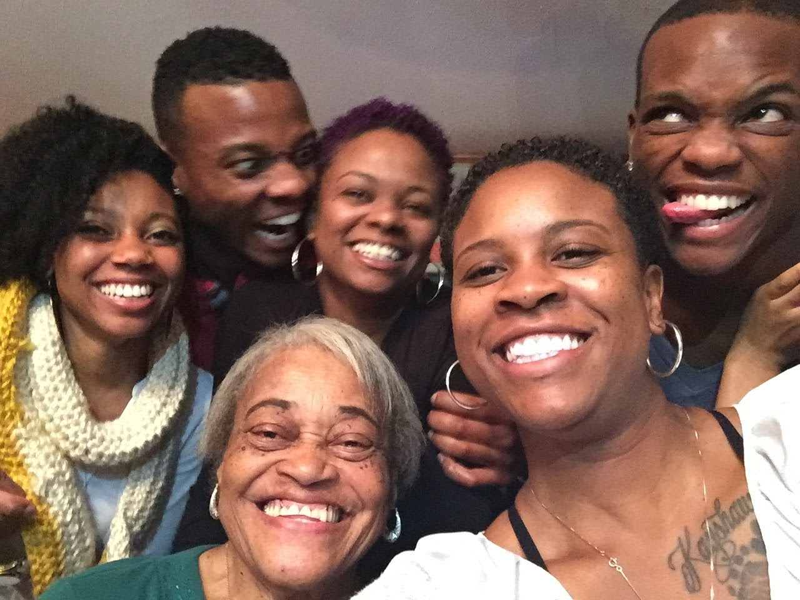
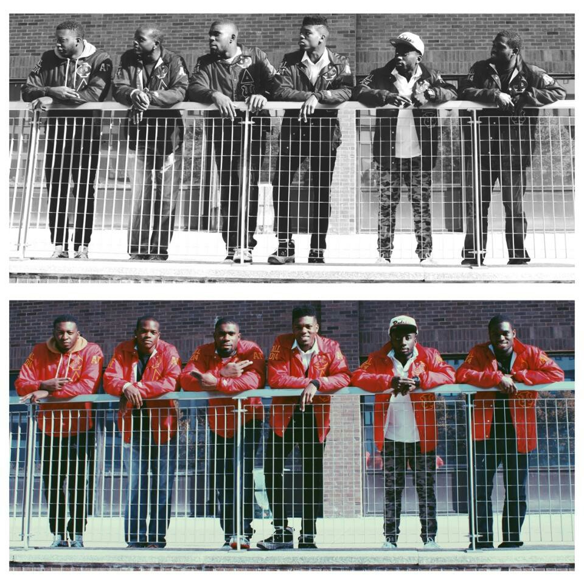
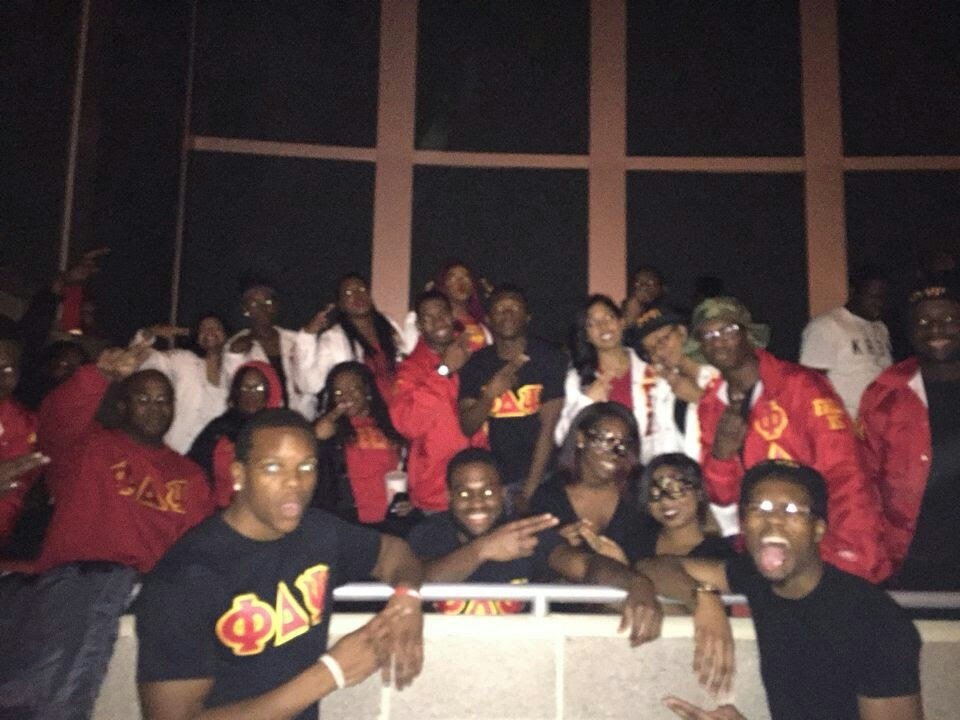

Hello! Welcome to my first page. I am an aspiring cybersecurity unicorn. This little project is just to help me get more familiar with HTML syntax. I am also on a mission to learn and understand CSS, Python, Assembly Language, among other things. Also, this site is to tell the world about myself a bit through my travels and blogs. Hopefully this page will develop into more than just HTML over time. Enjoy!!
My family is my foundation. They support me, believe in me, keep me grounded, roast me when necessary, and love me unconditionally. Without my family I would not be the person I am today. Shout-out to Mom, Dad, Charles, Chavon, Kelli, Tammy, Einola and everyone else. I am beyond blessed to have been put on this Earth with you as my biological family.
 When in college, me and 5 other individuals started a new Chapter of a fraternity. Pledging with Phi Delta Psi Fraternity Inc tested me in many ways, but what I truly cherish about it is it gave me the confidence to be comfortable with myself around people that look like me who are not in my biological family.
Our motto: "All that we put into the lives of others comes back into our own."
 I attended Stony Brook University in Long Island, New York from 2011-2016. I had a full college experience, learning a lot about myself while making some lifelong friends as well. This is also where I discovered my passion for rugby. I graduated with a Bachelor's Degree in Multidisciplinary Studies, concentrating on Philosophy, History, and Sociology.
I have been working since I was a senior in High School, gaining a lot of valuable experience working under many types of employers as well as working alongside many kinds of employees. Please see my resume to view my most relevant work experience.